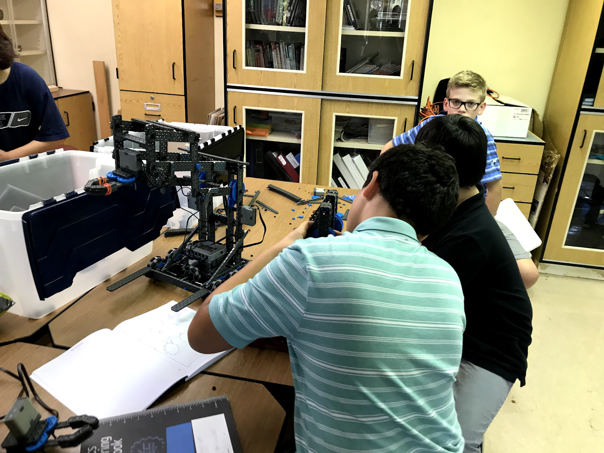
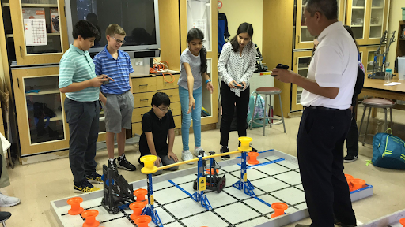

Team 39X is committed to mentoring aspiring engineers and young roboticists. We are very active in our community and by helping younger kids, we feel that we can help to spread to STEM to a greater audience. Our current outreach activities are detailed below.
Every Tuesday during the school year, we head over to Cranbrook’s VEX IQ Lab where we mentor middle school and elementary school VEX IQ teams. Because the majority of our team members were avid participants in VEX IQ a few years ago, we have lots insight and ideas that we share with the IQ teams. In addition to helping with build and brainstorm sessions, Saaim, Paul and Avaneesh help to run CAD and Coding Sessions. These sessions aim to introduce the wonderful world of CAD and programming in a way that elementary and middle schoolers will understand.
robots@thelibrary is an initiative that was started by FRC Team 3617: Cold Logic from Marquette, MI. robots@thelibrary hopes to initiate a long-lasting relationship between a robotics team and their local library. In our case, we plan on hosting an event on November 24th at the Rochester Hills Public Library from 1-2:30 p.m. robotics@thelibrary is the perfect opportunity for us to expose people of all ages to VEX robotics, its mission and our robotics team as a whole. We are truly honored to participate in this initiative and we can’t wait to see the results that it will bring!
In the past, we have demonstrated our robots (notably Viper I, Valkyrie II and Vector III) at Cranbrook’s Open Houses. These demo sessions are a great way for us to show off our robots and explain some basic engineering concepts to prospective students. The majority of our club participates in these events, which not only draws more people to the Cranbrook Robotics Program but also it piques the interest of people who may have never thought that robotics was interesting. We plan on demonstrating Viper II at the October 2018 Cranbrook Schools Open House, an event that we are quite looking forward to!
Avaneesh helps Vex IQ teams build a base for their upcoming competition Avaneesh investigates a team’s lift and offers advice
 Saaim helps a team build a claw and four bar Vex IQ teams scrimmage while mentors and classmates cheer them on